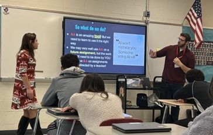

Business Analyst Intern — Verisk
Optimized a Scrum team's workflow and built a Jira story-generation agent using Claude that lets project owners quickly define user stories and new features, enabling spec-driven development within the team.
Hi, I'm Frederick Blake — a business analyst and former history teacher turned data and AI practitioner. I'm currently pursuing an M.S. in Business Analytics and AI at Stevens Institute of Technology while working as a Business Analyst Intern at Verisk, where I build AI-assisted tools that help teams practice spec-driven development. I care about turning messy processes into clear, data-backed systems — whether that's a Jira workflow, a staffing schedule, or a classroom lesson plan.

Frederick began his career in the classroom, teaching history at Fair Lawn Public Schools after graduating Summa Cum Laude from The College of New Jersey with a B.A. in History and Secondary Education. Teaching sharpened skills that carry directly into his current work in business analytics and AI: breaking down complex material for different audiences, managing competing priorities under real time pressure, and using data to figure out what's actually working.
That interest in translating complexity into clarity led him to Stevens Institute of Technology, where he is pursuing an M.S. in Business Analytics and AI (expected December 2026). Alongside his coursework, he interns as a Business Analyst at Verisk, where he's optimized a Scrum team's workflow and built a Jira story-generation agent using Claude that helps project owners define user stories faster. He also consults independently for Lightbridge Academy, where he built a staff-scheduling optimizer that predicts classroom attendance with under a 3% failure rate and has reduced staffing costs by more than 3% per center annually.
Outside of client work and coursework, Frederick builds personal AI agents — from a note-organizing MCP agent to an insurance risk advisor that pairs a language model with his own trained machine learning models — as a way of keeping his skills sharp and exploring what's possible at the intersection of teaching, analytics, and AI.
Optimized a Scrum team's workflow and built a Jira story-generation agent using Claude that lets project owners quickly define user stories and new features, enabling spec-driven development within the team.
Built a staff scheduling optimizer that predicts classroom attendance with under a 3% failure rate and reduces staffing costs by 3%+ per center annually (six figures company-wide), while keeping project cost minimal by using pre-paid subscription services the company already had.
Business Intelligence and Analytics Club member.
Member: Kappa Delta Pi (Education Honors Society), Phi Alpha Theta (History Honors Society), Phi Kappa Phi (Multidisciplinary Honors Society).
An AI agent built with Claude that lets project owners quickly define user stories and new features in Jira, enabling spec-driven development within a Scrum team.
A scheduling tool that predicts classroom attendance with under a 3% failure rate and reduces staffing costs by 3%+ per center annually, built using services the company already had in place to keep project cost minimal.
A custom Python MCP (Model Context Protocol) server that turns rough, train-of-thought notes into properly formatted, cross-linked notes in an Obsidian vault, using Claude Desktop as the interface — no coding required at use-time. It reads each raw note from the vault's inbox, rewrites it into a consistent template while preserving the original substance, tags it using only tags that already exist in the vault, and adds inline wikilinks to genuinely related notes — verified by actually reading the candidate note first, not just matching titles. It never overwrites an existing note without asking first.
An LLM-assisted workflow, not an autonomous agent: a user describes a driver in natural language, the LLM calls a trained ML model (Random Forest or Multiple Linear Regression), the model returns a predicted claim likelihood and premium, and the LLM presents a recommendation for a human to act on. It does not itself approve or deny anything.
Cleaned, merged, and visualized synthetic Syntegra claims data to surface insights for Sales & Marketing teams researching Cardio Vascular Metabolic (CVM) disease-related claims, extending a provided rough code outline with additional key business questions developed and answered independently.
Research published in Teaching Social Studies, Vol. 23, No. 2, pp. 123–129.
This resume site itself — a hand-built HTML/CSS/JS rebuild used as hands-on practice with GitHub Spec Kit's spec-driven development workflow (specify → plan → tasks → implement), with no framework and no build step.
Awarded to exceptional students entering Stevens to pursue a master's degree full-time; a one-time tuition scholarship awarded at admission.